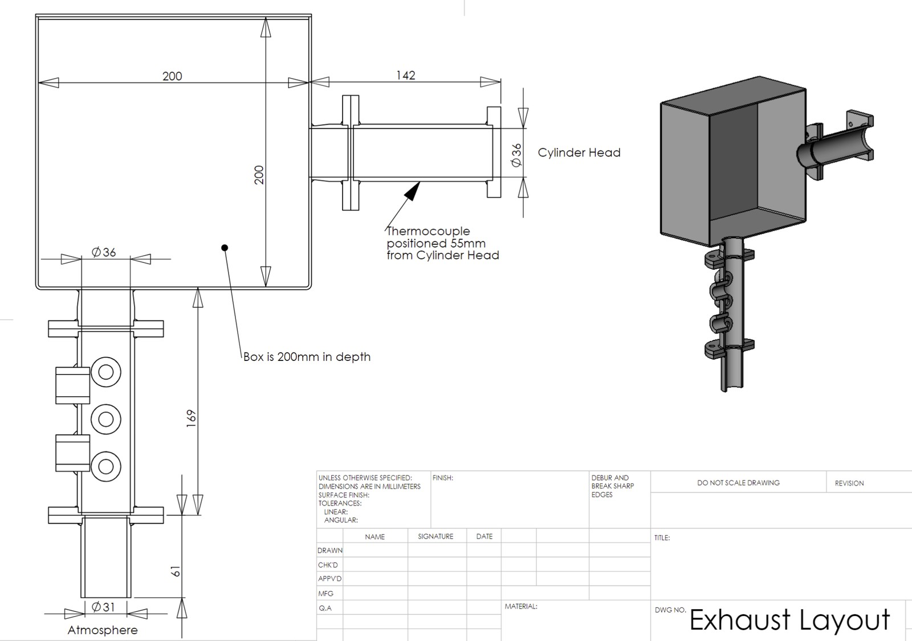

2026
GDI & HCCI Engine Modelling
Building, calibrating and modifying single-cylinder engine models in AVL Cruise M across two combustion modes, then assessing what renewable fuels and aftertreatment would be needed to take them towards net zero.

Intake system layout: throttle body, air heater tube, plenum and intake runner
The work
ISeven cases at 1,500 rpm on a common single-cylinder geometry: 90 mm bore, 88.9 mm stroke, 160 mm connecting rod, 11.5:1 compression ratio. Cases 1–3 ran homogeneous charge compression ignition on a low-lift camshaft; cases 4–7 ran gasoline direct injection spark ignition on a high-lift camshaft.
Normalised rate of heat release inputs were derived by hand before modelling: instantaneous cylinder volume per crank angle, log pressure against log volume to extract separate polytropic indices for compression and expansion, then first-law heat release, then normalisation against peak.

Exhaust system layout and dimensions
Calibration
IIModels were tuned against experimental targets for lambda, IMEP, peak pressure and the crank angle of peak pressure. Lambda matched exactly across all seven cases. IMEP stayed within 10% throughout. Six of seven cases matched peak pressure within ±4%; case 3 was the exception at 9% low, because reaching earlier HCCI phasing at higher load needs either a more reactive charge or a higher residual fraction, and both were constrained by the available valve timing range.
Emissions calibration ran into a genuine tool limit worth stating: AVL Cruise M's classic species kinetic model has a floor on CO output that no multiplier reduces, so isCO could not be matched to experiment in any case. CO2 is reported wet and needs dividing by 1.57 for dry-basis comparison.
The NOx results followed the physics cleanly. HCCI cases produced far lower NOx than GDI, consistent with the Zeldovich thermal mechanism needing sustained temperatures above roughly 1800 K. Within the GDI cases NOx rose with load: 3.906, 6.390 and 8.370 g/ikWh across cases 5, 6 and 7.
Modifications
IIIThree changes were applied across all cases, chosen to cut emissions while holding IMEP roughly constant so the comparison stayed meaningful.
Valve timing
Shifted 15° on both intake opening and exhaust closing. For the GDI cases this removed the positive valve overlap that was raising residual gas fraction and pumping losses; CO fell consistently, most sharply in case 7 from 1.03% to 0.39%. For HCCI, where there is no spark and autoignition depends entirely on trapped charge mass and temperature, the same shift moved phasing favourably, and case 3 gained IMEP from 3.48 to 4.60 bar.
Throttle opening
Increased 2–5° where applicable, raising air mass flow and improving combustion completeness.
Fuel blends
Selected by iteration rather than assumption. For GDI, gasoline-ethanol-water blends held IMEP but added no energy; hydrogen raised IMEP to 3.50 bar but ran rich at lambda 0.89; a hydrogen-heavy blend spiked NOx to 14.53 g/h on elevated flame temperature and was rejected. The blend selected was 85% gasoline, 5% hydrogen, 10% ammonia, reaching stoichiometric lambda at 3.51 bar IMEP with CO at 0.53%. For HCCI the choice was 50% diesel, 45% ammonia, 5% hydrogen, giving lambda 1.47, IMEP 2.87 bar, CO at zero and NOx at 0.05 g/h. Diesel's cetane number secures autoignition while ammonia carries the carbon reduction.
Wider assessment
IVThe report also covered renewable fuels against the UK's 2050 net-zero commitment, comparing hydrotreated vegetable oil, green hydrogen and e-methanol on technical, environmental, commercial and legal grounds; exhaust aftertreatment across the baseline and modified powertrains, including why a three-way catalyst suits GDI but HCCI needs a diesel oxidation catalyst with SCR, and why the ammonia blend requires an ammonia slip catalyst under Euro 7; and the implications of hybrid electrification for each.
Role
VOne of five. Responsibilities for AVL modelling were divided across the seven cases, with the group initially split between model setup and heat release processing, then calibration cases assigned individually and results consolidated in a shared spreadsheet with a changelog.